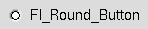

Fl_Button | +----Fl_Round_Button
#include <FL/Fl_Round_Button.H>

The Fl_Round_Button subclass display the "on" state by turning on a light, rather than drawing pushed in. The shape of the "light" is initially set to FL_ROUND_DOWN_BOX. The color of the light when on is controlled with selection_color(), which defaults to FL_RED.